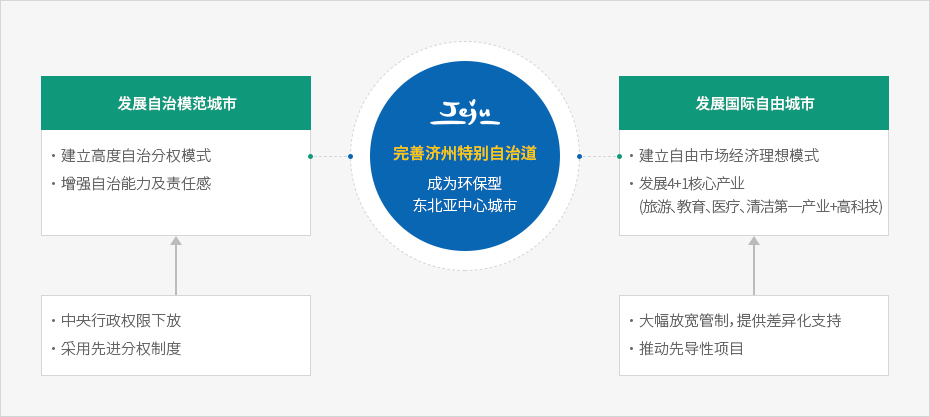

济州特别自治道
- Home
- 基础情况
- 行政及经济
- 济州特别自治道
韩国自治分权的先进模式——济州特别自治道
什么是特别自治道？
特别自治道是指按照当地条件和特点适用特例，并在自主决策和负责原则下管理的特别地区，拥有不同于其他普通道的高度自治权。
※ 特别自治道为广域地方自治团体种类之一。根据韩国《地方自治法》第二条第一款，地方自治团体分为下列两种：
- 1. 特别市、广域市、特别自治市、道、特别自治道
- 2. 市、郡、区
什么是特别自治道？
发扬济州的地域、历史、人文特色，以自主、负责、创造性、多样性为基础，设立拥有高度自治权的济州特别自治道，切实保障地方分权。旨在通过广泛放松行政监管、采用国际标准、管理环境资源等举措，打造经济与环境协调发展的环境友好型国际自由城市，增进道民福利，促进国家发展。济州特别自治道的启航
2006年2月9日韩国国会全体会议通过《建立济州特别自治道及开发国际自由城市的特别法》，2006年7月1日“济州道”正式更名为“济州特别自治道”，同时拥有了全新的法律地位。
由此，拥有自治立法权、自治行政权、自治组织人事权、自治财政权等自治权。此外，还将教育自治制度融入一般自治，建立自治警察制，建立起不同于其他普通地方自治团体的先进地方分权模式。
济州特别自治道的现状
特别自治道建立以来，10余年间有4660项中央权限下放，致力于打造特色自治制度。由此，济州正在为旅游产业、教育医疗产业、清洁第一产业、高科技产业等济州地区核心产业和环保产业发展奠定基础，构建国际化和地方分权的先导性作用模式。 济州特别自治道的基本构想


完善济州特别自治道 - - 成为环保型东北亚中心城市
-
发展自治模范城市
- 建立高度自治分权模式
- 增强自治能力及责任感
- 中央行政权限下放
- 采用先进分权制度
-
发展国际自由城市
- 建立自由市场经济理想模式
- 发展4+1核心产业（旅游、教育、医疗、清洁第一产业+高科技）
- 大幅放宽管制，提供差异化支持
- 推动先导性项目